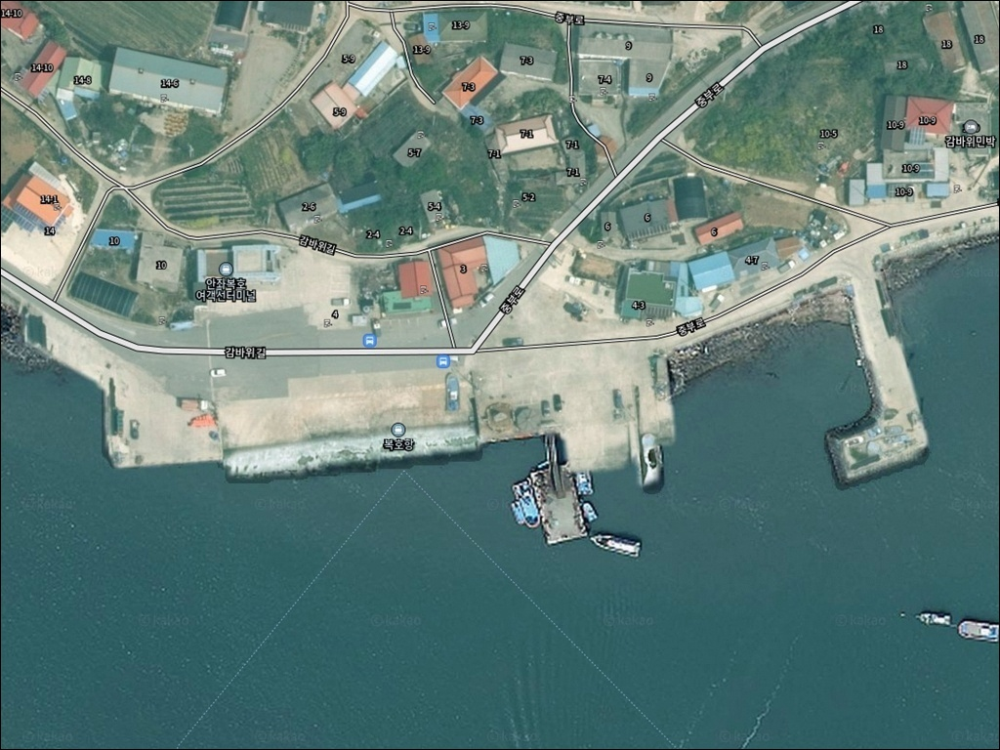
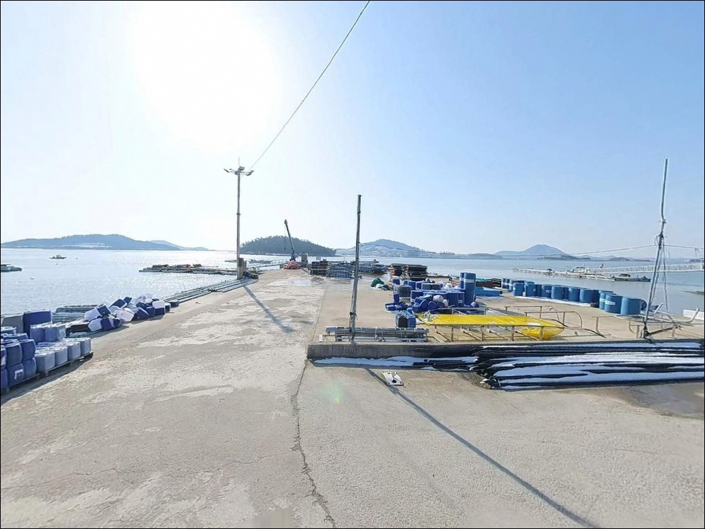
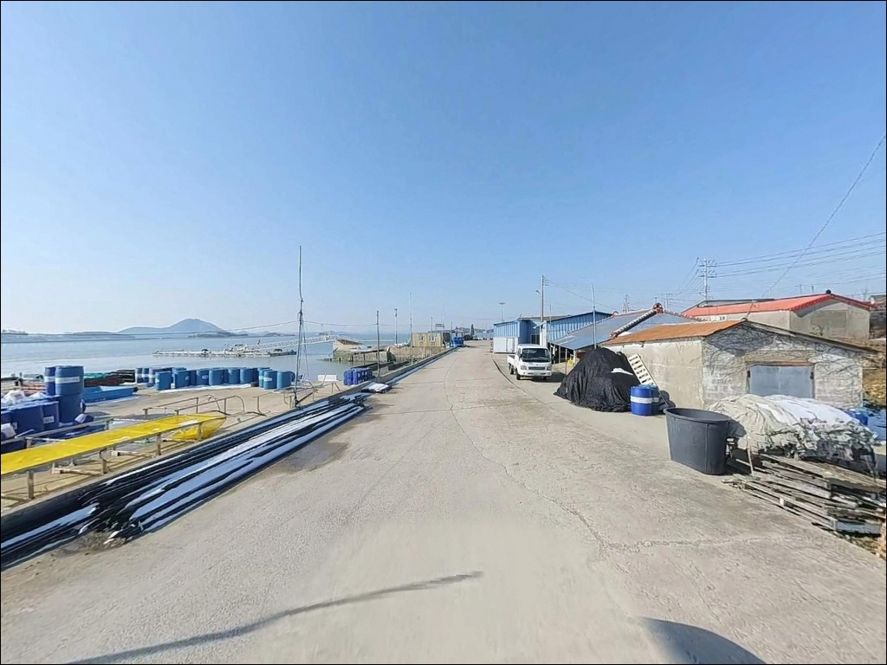
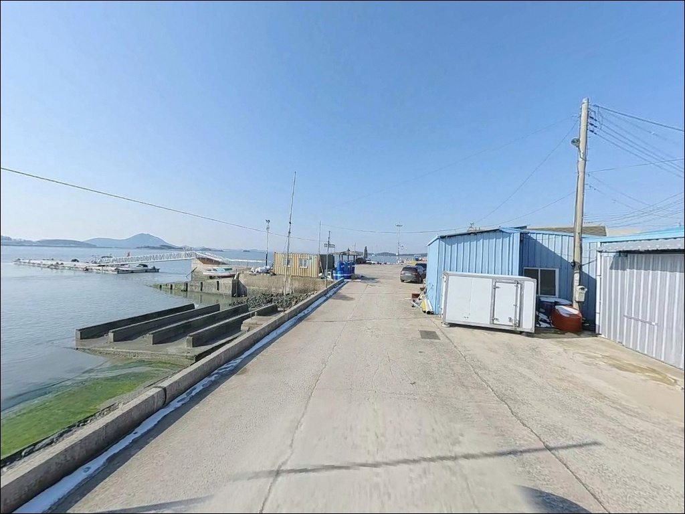
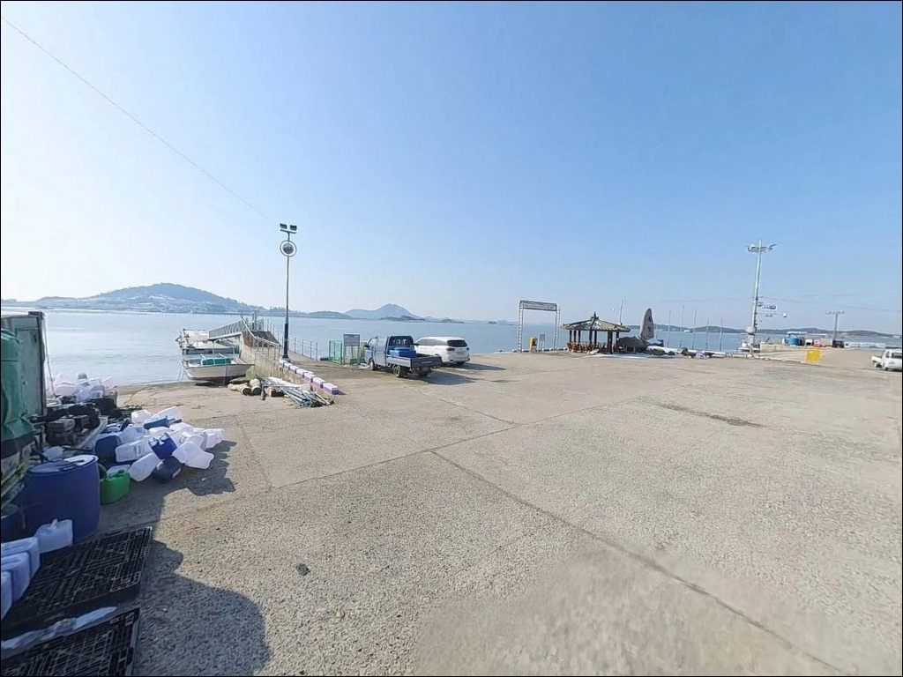
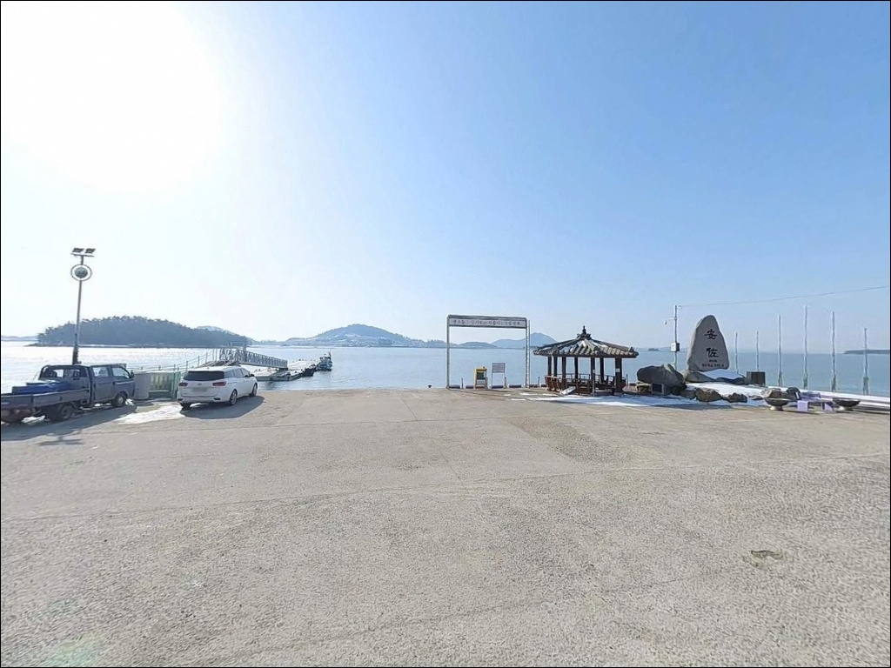
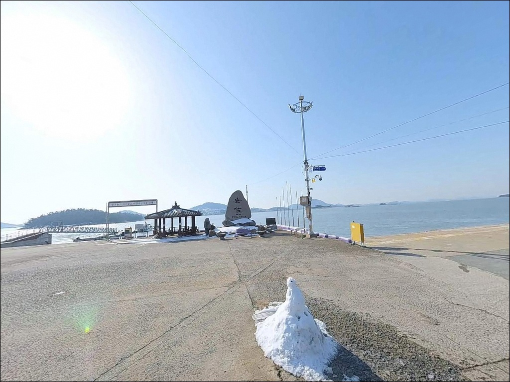
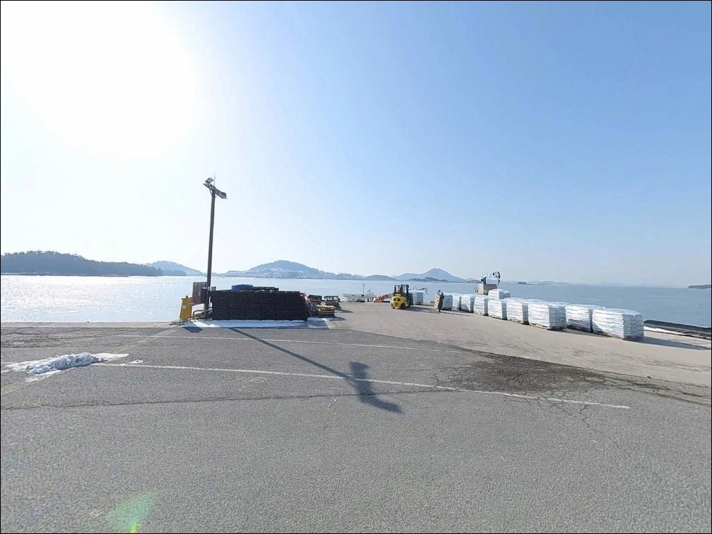
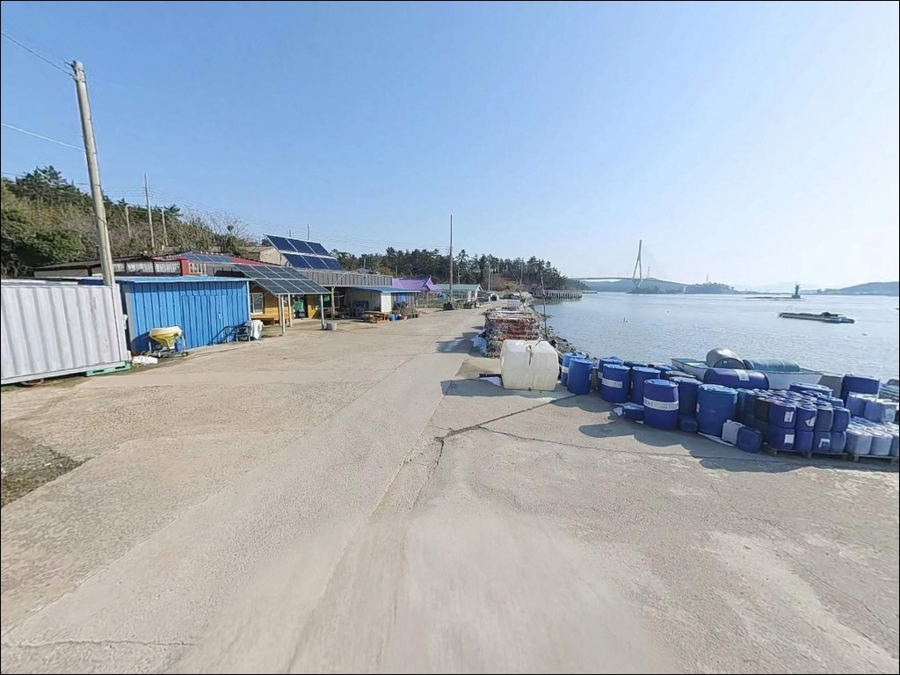

복호항 (복호선착장), 전남 신안군 고요한 수면을 바라보며 차박, 낚시를 즐기기 좋은 해안
이 페이지에는 광고(제휴 링크 포함)가 있으며, 광고 링크를 통해 구매하면 운영자가 판매 수익 또는 수수료를 받을 수 있습니다. 포인트 사진: 카카오맵 스카이뷰·로드뷰. 이 페이지의 지도·사진 이미지는 카카오맵의 실제 서비스 이미지와 다를 수 있습니다.


포인트 안내
복호항 (복호선착장)
전남 신안군 안좌면 복호리 73-21
서해안 낚시에서 가장 많이 틀리는 판단은
물때 계획 없이 출발하는 것입니다.
복호항은 안좌도 내만에 자리한 소규모 선착장으로,
조수 간만의 차가 크게 형성되는 구조입니다.
간조 전후 시간대에는 선착장 주변 수심이
급격히 낮아져 낚시 자리 자체가
사라지는 경우가 생깁니다.
전남 신안군 안좌면 복호리,
아직 많이 알려지지 않은 이 선착장은
바다타임 낚시포인트 데이터베이스에
등재된 방파제 중심 포인트입니다.
원투낚시와 찌낚시, 루어낚시를
두루 시도해볼 수 있는 구조를 갖추고 있습니다.
이 글은 복호항의 진입 동선과 차박 환경,
물때 기반 낚시 타이밍, 지형 여건을 중심으로 정리합니다.
조황 단정이나 특정 어종 보장은
이 글의 범위에 포함되지 않습니다.

1. 진입 동선과 포인트 접근 여건
안좌도는 팔금대교와 안좌대교를 통해
암태도 방면에서 차로 진입할 수 있습니다.
천사대교 개통 이후 육지에서 차량으로 연결되는
경로가 확보되어 있어,
섬 지역치고는 접근성이 나쁘지 않은 편입니다.
다만 복호리까지 이어지는
안좌도 내부 마을 도로는
왕복 1차로 수준의 좁은 구간이
포함되어 있습니다.
대형 SUV나 캠핑 장비를 실은 차량이라면
출발 전 위성지도로 진입로를
미리 확인하는 것이 기본입니다.
선착장 입구 부근에서 소형 차량 기준
회차 가능한 공간을 확인할 수 있으며,
방파제 초입 공터가
주차 후보지로 활용됩니다.
복호여객선터미널이 선착장과 인접해 있어
주변 공간이 다소 분산되어 있습니다.
선착장 안쪽 작업 공간과 어선 접안 구역을 피해
주차 자리를 잡는 것이 기본 매너입니다.

2. 차박 환경과 야간 체류 여건
복호리는 소규모 어촌 마을 특성상
야간 통행이 많지 않은 편이지만,
복호여객선터미널과 민가가 인접해 있어
완전한 고립형 차박 환경은 아닙니다.
여객선 운항 시간대에는 주변 통행이 있으며,
낮 동안에는 터미널 이용객의
차량 이동도 있습니다.
내만 구조라 외해 파도 영향은 제한적입니다.
야간에는 터미널 주변 조명이 일부 있으나,
방파제 끝단으로 갈수록 광량이 부족해
개인 헤드랜턴은 반드시 챙겨야 합니다.
바람 취약 방향은 계절과 기상에 따라 달라지므로
출조 당일 기상 예보 확인이 기본입니다.
차박을 메인으로 삼기보다는
낚시 목적 방문에 하룻밤 체류를 더하는 방식이
이 포인트 환경에 어울립니다.
선착장 작업 차량이 이른 아침부터 움직이기 시작하므로,
주차 자리를 잡을 때 동선을 미리 파악해 두는 것이 좋습니다.


3. 주변 편의시설 및 인프라 현황
복호항 주변 반경 1km 이내에서
편의점이나 식당은 확인되지 않습니다.
완전 자급 체제로 진입하는 것이
현실적인 준비 방식입니다.
식수, 얼음, 낚시 소품, 연료는
출발 전 충분히 갖추고 가야 합니다.
안좌면 읍동리 방면으로 이동하면
탑마트와 주유소를 이용할 수 있습니다.
섬 내부 도로 특성상 직선거리보다
실제 이동 시간이 더 걸리는 구조이므로
출발 전 읍동리 기준 보급을 마치는 것이
효율적입니다.
안좌보건지소가 안좌면 내에 있어
응급 상황 발생 시 참고할 수 있습니다.
중증 응급 상황에서는 신안군 읍내 방향으로
이동이 필요하므로,
비상 연락처와 응급 약품은
기본으로 지참하는 편이 안전합니다.

4. 방문 전 반드시 확인해야 할 준비사항
복호항 방문 전에 가장 먼저 확인할 것은
물때입니다.
서해안 특성상 안좌도 일대는
조수 간만의 차가 크게 형성되며,
간조 전후에는 선착장 주변 수심이
급격히 낮아지는 구조입니다.
바다타임에서 안좌도 기준 물때를 미리 확인하고,
만조 전후 2시간을 낚시 가능 타이밍으로
계산하는 것이 기본 전략입니다.
물때를 맞추지 않으면
서해안 내만 선착장은 낚시 자리 자체가
사라지는 구조입니다.
이 한 가지 판단이 방문 성패를 가르는
핵심 변수입니다.
섬 지역 특성상 기상 변화가 빠를 수 있어
출조 당일 아침 풍속과 파고를
재확인하는 것이 안전합니다.
복호여객선터미널에서 여객선이 수시로 운항하므로
항로 방향을 파악하고
캐스팅 시 항로를 방해하지 않도록 주의해야 합니다.
내만 선착장에서는 채비 손실이 생기는 경우가 있어
여분 채비도 넉넉하게 챙기는 편이 좋습니다.

5. 방파제 끝단에서 원투 자리가 달라지는 조건
복호항은 내항과 외항이 구분되는
방파제 구조를 갖추고 있습니다.
선착장 내항은 잔잔한 수면이 유지되는 편이며,
방파제 끝단 외항 쪽으로 갈수록
조류 흐름이 살아나는 구조입니다.
방파제 끝단은 조류가 통하는 자리로,
원투 채비가 힘을 발휘하는 구간입니다.
안좌도 일대 내만은 신안 다도해 특성상
해저 지형이 완만한 편이며,
갯벌과 모래질 바닥이 혼재하는 구간이 있습니다.
내항 쪽 수심은 만조 기준으로도
얕은 구간이 존재하며,
방파제 끝단 외항 방면은
상대적으로 수심이 깊게 형성됩니다.
복호항처럼 내만 수심이 얕은 구조에서는
원투로 외항 방향을 공략하는 접근이
기본 전술이 됩니다.
이 포인트의 최신 조황은
출조 전 별도로 검색해보시기 바랍니다.


6. 복호항에 어울리는 낚시 스타일
원투낚시는 이 포인트 지형에 가장 잘 맞는 방식입니다.
방파제 외항 방향으로 채비를 멀리 던져
바닥층을 탐색하는 방식으로,
만조 전후 타이밍에 집중하면 효율적입니다.
붕장어, 보리멸, 도다리 계열을
기대해볼 수 있는 지형 조건을 갖추고 있습니다.
찌낚시도 이 구조에 맞는 스타일입니다.
방파제 꺾이는 지점이나 끝단에서
조류 흐름을 태우는 반유동 채비가 어울립니다.
가을철은 감성돔 시즌과 겹치는 시기로,
이 일대 내만에서
감성돔이 접근하는 패턴이 형성됩니다.
볼락 라이트게임은 야간에 시도해볼 만한 방식입니다.
방파제 주변 석축이나 구조물 경계를 따라
소형 지그헤드 채비로 탐색하는 방식이
이 포인트 구조에 어울립니다.
봄철과 초가을 야간에
볼락류가 방파제 주변으로 접근하는
경향이 있습니다.

7. 대안 포인트 및 플랜 B 동선
복호항에서 조과가 부진하거나
주차 여건이 여의치 않을 때는
안좌도 내 다른 선착장과 방파제를
탐색하는 것이 현실적인 플랜B입니다.
안좌면 읍동항은 복호항보다 규모가 있는 항구로,
주차 여건이 상대적으로 양호하고
진입 동선이 안정적입니다.
암태도 오도선착장은
천사대교 방면으로 이동하면 닿는 대안 포인트입니다.
복호항과 유사한 내만 환경이면서
낚시 접근성이 확인된 포인트로,
복호항에서 조황이 맞지 않을 때
이동 경로로 활용하기 좋습니다.
자라도 방면으로는 자라대교를 통해 이동할 수 있으며,
자라도 선착장이 추가 탐색 후보가 됩니다.
같은 안좌도 해안선을 공유하는 소규모 항들은
지형 패턴이 유사해
현장 이동 대응이 비교적 수월한 편입니다.

준비만 갖추면 충분한
복호항, 안좌도의 조용한 방파제 낚시 자리
조용히 방파제 한쪽에 자리를 잡고
원투 채비를 던져놓는 형태의 낚시를 즐기는 분이라면
복호항의 환경이 잘 맞는 구조입니다.
대물 포인트를 기대하기보다는
물때를 맞추고 차분하게 바닥층을 탐색하는 방식,
또는 야간에 방파제 구조물 주변에서
볼락 라이트게임을 즐기는 방식이
이 포인트에 어울립니다.
온라인 자료가 많지 않은 곳이어서
사전 답사 형태로 접근하는 것이
이 포인트를 제대로 활용하는 방법입니다.
편의시설을 자주 이용해야 하거나
대형 캠핑카로 움직이는 경우라면
주차와 진입 여건을 먼저 해결해야 합니다.
읍동리 방면 기반 시설을 확인하고,
복호항을 메인 포인트로 삼되
인근 항을 플랜B로 설정해두는 것이
이 권역을 활용하는 효율적인 방식입니다.
물때를 맞추고, 자급 준비를 갖추고,
안좌도 선착장 방파제 끝단에 조용히 자리를 잡는다면,
낚시와 하룻밤 차박을 함께 즐기기에
부족함이 없는 포인트입니다.